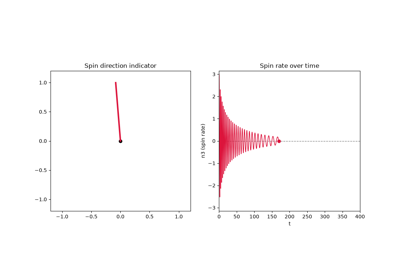

Examples#
This gallery walks through every public feature of physicskit.classical:
Newtonian, Lagrangian, and Hamiltonian formulations of the same mechanics,
coupled chains and their solitons, rigid-body rotations, the symplectic
integrators underneath all of it, and the interactive/animated visualizers
built on top.
Each script in this gallery is self-contained and can be run directly with
python examples/classical/<section>/<script>.py. Every script also
carries an RST module docstring as its title/description and uses # %%
markers to split narrative text from code, which is exactly what
Sphinx-Gallery renders into the pages below – the script is the source of
truth for what you see, not a copy of it.
Sections#
newtonian – direct force-and-acceleration integration: the oblique cannonball problem, Kepler orbits with perihelion precession and a power-law perturbation, angular-momentum conservation as a diagnostic distinct from energy conservation, and Noether’s theorem’s manifest (rotational) versus hidden (Kepler’s Laplace-Runge-Lenz) symmetries side by side.
lagrangian – systems built from a Lagrangian: the chaotic double pendulum, a bead on a rotating hoop (a pitchfork bifurcation), the normal modes of coupled oscillators, and how to write a custom system with
LagrangianEnginefrom scratch.hamiltonian – phase-space methods: Poincare sections and KAM torus breakdown in the Henon-Heiles system, Liouville’s theorem illustrated with a swarm of pendulums, action-angle variables for the pendulum, and Hamilton’s unified
(q, p)canonical phase space shared by a librating and a rotating pendulum.rotations – rigid-body dynamics: the intermediate axis theorem (Dzhanibekov effect), both as a stability argument and as a literal tumbling 3D rigid body, and the heavy symmetric top’s precession and nutation.
chains – coupled degrees of freedom: the harmonic chain’s exact normal modes, the Fermi-Pasta-Ulam-Tsingou recurrence, and Sine-Gordon kink propagation and kink-antikink breathers.
integrators – why the choice of integrator matters: symplectic (Yoshida4) versus RK4 long-horizon energy drift, and automatic timestep selection with
estimate_dt.visualizers – live and interactive displays:
SideBySideAnimatorpairing a physical-space animation with phase/energy diagnostics, and interactive Plotly views of the SO(3) momentum sphere and orbits.
Coupled lattice chains#
One-dimensional lattices: the exactly-solvable harmonic chain, the Fermi-Pasta-Ulam-Tsingou beta-lattice and its famous non-ergodic recurrence, and the discrete sine-Gordon chain’s topological solitons.


Sine-Gordon solitons: kink propagation and a kink-antikink breather
Hamiltonian phase space#
Phase-space structure: KAM torus breakdown in the non-integrable
Henon-Heiles system, Liouville’s theorem via a sheared swarm of
pendulums, action-angle variables for the simple pendulum, and
Hamilton’s unified (q, p) canonical phase space itself, shared by a
librating and a rotating pendulum.

The Henon-Heiles system: Poincare sections and KAM torus breakdown


Integrators#
Why physicskit.classical defaults every conservative system to a symplectic
integrator (RK4’s energy drifts monotonically, Verlet/Yoshida4 stay
bounded), and automated timestep selection with
estimate_dt().

Why symplectic integration: RK4 leaks energy, Yoshida4 does not

Lagrangian mechanics#
Systems whose equations of motion are derived symbolically from a
Lagrangian \(L(q, \dot q, t)\) via
LagrangianEngine – a double
pendulum, a bead on a rotating hoop, coupled oscillators, and an elastic
(spring) pendulum showing 1:2 autoparametric resonance – including one
built entirely from scratch, outside physicskit.classical.systems,
showing the raw symbolic-derivation workflow directly.


The bead on a rotating hoop: a pitchfork bifurcation

Coupled oscillators: normal modes of a small harmonic chain

Building your own system: LagrangianEngine from scratch

The Elastic Pendulum and 1:2 Autoparametric Resonance
Newtonian mechanics#
Vector dynamics under a force: free fall with an oblique launch
velocity (ProjectileMotion) and the
2-body Kepler problem (KeplerSystem),
including the post-Newtonian and power-law perturbations that make
orbits precess, plus a pendulum viewed from Earth’s rotating frame
(FoucaultPendulum), whose
Coriolis-driven swing-plane precession demonstrated that rotation
directly.

Free fall with an oblique velocity: the cannonball problem


KeplerSystem’s other perturbation: the power-law term

Angular momentum: a different conservation law from energy

Noether’s Theorem and the Kepler Problem’s Hidden Symmetry
Rigid-body rotations#
Free and torqued rigid bodies: the intermediate axis theorem (Dzhanibekov effect) for a torque-free top, rendered both abstractly (the SO(3) momentum sphere) and literally (a tumbling 3D body); a heavy symmetric top’s precession and nutation under gravity; Euler’s disk settling into a finite-time singularity; and a rattleback’s one-way spin reversal.

The intermediate axis theorem (Dzhanibekov effect)

The heavy symmetric top: effective potential, precession and nutation

The Dzhanibekov effect, literally: a tumbling 3D rigid body

Euler’s Disk: a finite-time singularity on a tabletop

Visualizers#
Side-by-side physical-space/phase-space animation, and interactive (draggable/zoomable) Plotly figures for the SO(3) momentum sphere and a precessing orbit.

SideBySideAnimator: physical space + phase/energy diagnostics, live

Interactive Plotly visualizers: SO(3) momentum sphere and orbit